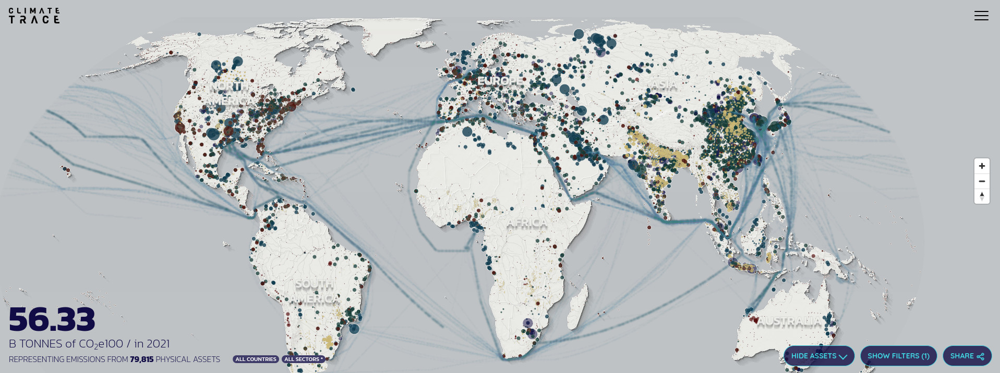

Monitoring networks and datasets
Global Permanent Monitoring Networks
Monitoring networks that still collect in-situ Observations & Measurements and where the data is imported, quality controlled and served by a national or international organization.
NOAA Global Surface Summary of the Day - GSOD
Description: Contains daily data from over 9000 stations (data from 1973 to the present) on Mean temperature (.1 Fahrenheit) Mean dew point (.1 Fahrenheit) Mean sea level pressure (.1 mb) Mean station pressure (.1 mb) Mean visibility (.1 miles) Mean wind speed (.1 knots) Maximum sustained wind speed (.1 knots) Maximum wind gust (.1 knots) Maximum temperature (.1 Fahrenheit) Minimum temperature (.1 Fahrenheit) Precipitation amount (.01 inches) Snow depth (.1 inches) Indicator for occurrence of: Fog, Rain or Drizzle, Snow or Ice Pellets, Hail, Thunder and similar.
- 🔗 Project website: https://catalog.data.gov/dataset/global-surface-summary-of-the-day-gsod/
- 📂 Data download URL: https://www.ncei.noaa.gov/data/global-summary-of-the-day/archive/
- 📰 Data license:
- 📕 Sparks, A. H., Hengl, T., & Nelson, A. (2017). GSODR: global summary daily weather data in R. Journal of open source software, 2(10), 177.
- 📠Unique locations: +9000
- 📋 Unique complete rows:
- 📠Tutorials & documentation: https://docs.ropensci.org/GSODR/
Climate TRACE
Description: Climate TRACE provides an inventory of major source of greenhouse gas (GHG) emissions around the world and provides independently produced estimates of how much each emits (points and polygons) (Whitmee, Anton, and Haines 2023).

- 🔗 Project website: https://climatetrace.org/
- 📂 Data download URL: https://climatetrace.org/data/
- 📰 Data license: https://roots.ornl.gov/guidelines/
- 📕 Whitmee, S., Anton, B., & Haines, A. (2023). Accountability for carbon emissions and health equity. Bulletin of the World Health Organization, 101(2), 83.
- 📠Unique locations: 352 million emitting assets
- 📋 Unique complete rows: +1 billion
- 📠Tutorials & documentation: https://api.climatetrace.org/v4/swagger/
Global (original) reference data sets
Original data sets produced by a single group or project (hence NOT compilations!) that are global but are not regularly updated i.e. do not stream live data.
Globe230k
Description: Globe230k is a benchmark dataset for Global Land Cover Mapping which includes cca 230,000 annotated images with a size of 512 × 512 and a spatial resolution of 1-m (Shi et al. 2023).
- 🔗 Project website:
- 📂 Data download URL: https://zenodo.org/doi/10.5281/zenodo.8429199
- 📰 Data license: CC-BY
- 📕 Shi, Q., He, D., Liu, Z., Liu, X., & Xue, J. (2023). Globe230k: A Benchmark Dense-Pixel Annotation Dataset for Global Land Cover Mapping. Journal of Remote Sensing, 3, 0078.
- 📠Unique locations: 6,500
- 📋 Unique complete rows: +1 billion
- 📠Tutorials & documentation:
Global compilations of data sets
Fine Root Ecology Database: FRED (compilation)
Description: Originally a plant root database but also contains some soil laboratory data and soil observations. Fully documented in Iversen et al. (2017).
- 🔗 Project website: https://roots.ornl.gov/
- 📂 Data download URL: https://doi.org/10.25581/ornlsfa.014/1459186
- 📰 Data license: https://roots.ornl.gov/guidelines/
- 📕 Iversen, C. M., McCormack, M. L., Powell, A. S., Blackwood, C. B., Freschet, G. T., Kattge, J., … & Violle, C. (2017). A global Fineâ€Root Ecology Database to address belowâ€ground challenges in plant ecology. New Phytologist, 215(1), 15-26.
- 📠Unique locations:
- 📋 Unique complete rows: 150,000
- 📠Tutorials & documentation: https://roots.ornl.gov/guidelines/
Iversen, Colleen M, M Luke McCormack, A Shafer Powell, Christopher B Blackwood, Grégoire T Freschet, Jens Kattge, Catherine Roumet, et al. 2017. “A Global Fine-Root Ecology Database to Address Below-Ground Challenges in Plant Ecology.†New Phytologist 215 (1): 15–26. https://doi.org/10.1111/nph.14486.
Shi, Qian, Da He, Zhengyu Liu, Xiaoping Liu, and Jingqian Xue. 2023. “Globe230k: A Benchmark Dense-Pixel Annotation Dataset for Global Land Cover Mapping.†Journal of Remote Sensing 3: 0078. https://doi.org/10.34133/remotesensing.0078.
Whitmee, Sarah, Blanca Anton, and Andy Haines. 2023. “Accountability for Carbon Emissions and Health Equity.†Bulletin of the World Health Organization 101 (2): 83. https://doi.org/10.2471/BLT.22.289452.